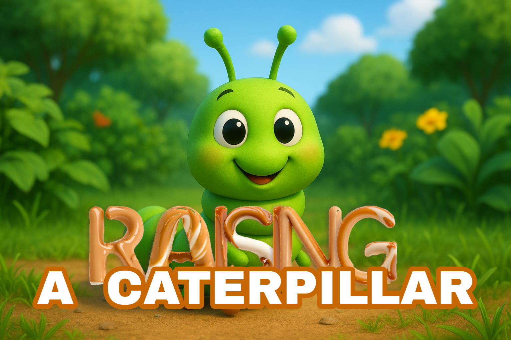
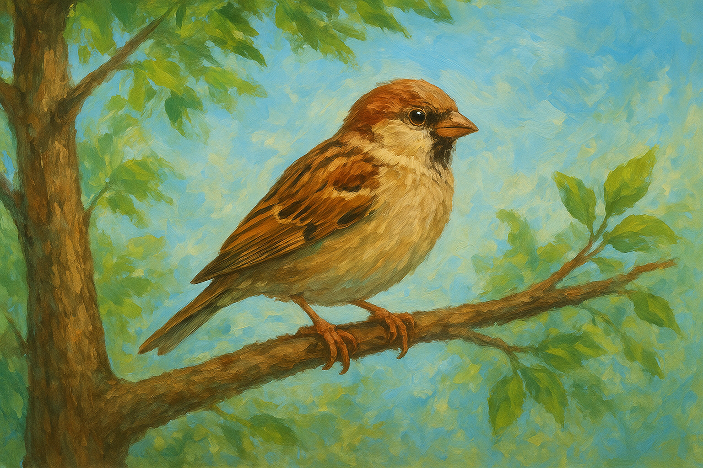

Skor:
0
Panjang:
3
Kecepatan:
Normal
▲
◀
▶
▼
Petunjuk
Gerakkan ulat dengan panah / WASD
Makan buah → muncul pertanyaan IPS
Benar = poin + panjang
Salah = ulat melemah 10 detik

❌ Jawaban Salah
Ulat anda jatuh sakit 🤒
OK
Browser kamu tidak mendukung video.

Protect the Cocoon from Birds
Start